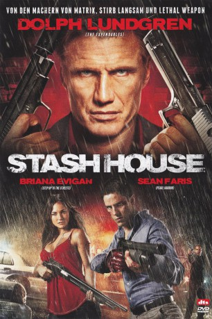

#10804 Stash House
 
 IMDB-Wertung: 4.8 / 10
IMDB-Wertung: 4.8 / 10  Metascore: 0
Metascore: 0 
Emma und David Nash haben es endlich gefunden: Ihr Traumhaus - das nur dummerweise zuvor als Hauptquartier eines Drogenbarons diente. Dessen Leiche liegt inzwischen zusammen mit Tonnen an Drogen versteckt unter den Dielenbrettern des Eigenheims. Und dessen Mörder, ein sadistischer Killer namens Spector, ist auf der Suche nach dem Versteck im Haus. Emma und David sitzen in einer tödlichen Falle, aus der es nur einen Ausweg gibt: Um überleben zu können müssen sie den Killer und seine Komplizen attackieren!
Jahr: 2012
Dauer: 99 Minuten
FSK: 16
Land: USA Studio: After Dark FilmsTonspuren: DTS - ,
Untertitel: Deutsch,
Auflösung: 1080p (1920x1080) Größe: 5468 MB
Genre: Thriller
Regisseur: Eduardo Rodriguez
Drehbuch: Gary Spinelli
Soundtrack: Luis Ascanio
Darsteller:
- Sean Faris als David Nash
 Briana Evigan als Amy Nash
Briana Evigan als Amy Nash Dolph Lundgren als Andy Spector
Dolph Lundgren als Andy Spector- Jon Huertas als Ray Jaffe
- Alyshia Ochse als Trish Garrett
 Don Yesso als Benz
Don Yesso als Benz- William Scharpf als Cop with Crew Cut
- Roger J. Timber als Cop
 Lawrence Turner als Max Farrell
Lawrence Turner als Max Farrell- Javier Carrasquillo als Cop #1
 Lance E. Nichols als Priest
Lance E. Nichols als Priest- Caleb Michaelson als Paramedic
- Sean Boyd als Fed #2
- Douglas Wilcox II als SWAT Officer (uncredited)
- Richard Holden als Millard Hanson
- Dennis Bagneris als Fed #1
- Marisa Schimmel als Girl at Church
- Chris Angerdina als Cop (uncredited)
- Gene Kevin Hames Jr. als Cop (uncredited)
- Shadoe Knight als Uniformed Police Officer 1 (uncredited)
- Michael Patrick Rogers als Uniformed Police Officer (uncredited)
- David Lee Valle als Bulldog (uncredited)
Datei: X:\2012(N-Z)\Stash House (2012, FSK16, 1920x1080).mkv seit 08.03.2019
Festplatte: HD 2012(N-Z)-2013(A-H)
 Es gibt insgesamt 138 Filme in der Gruppe '2012(N-Z)'
Es gibt insgesamt 138 Filme in der Gruppe '2012(N-Z)'